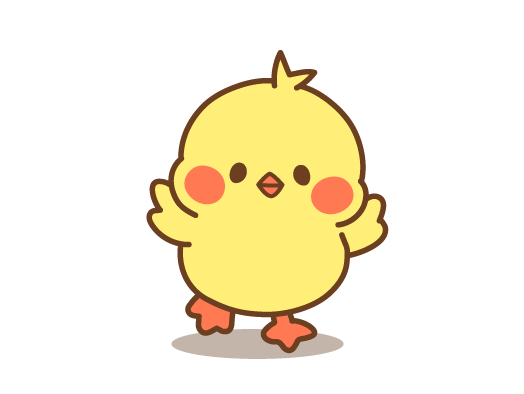

Tobi
A chubby bunny
Birthday:
MAY 31st
Hobbies:
Dancing
Likes:
Self-talk,
Ice cream, Sweet, Banana, Watermelon.
Instagram:
@tobi.tontonfriends
Personality:
Always positive and cheerful.
Winnie
A timid bear
Birthday:
DEC 10th
Hobbies:
Sleep. Lying down.
Likes:
Rainy day, Americano, Park bench, Coffee shop corner.
Instagram:
@winnie.tontonfriends
Personality:
Likes to be alone and likes to stay at home. Timid.
Yuta
A chubby shiba
Birthday:
JUL 7
Hobbies:
Talk
Likes:
Beer,
Getting discounts and more, Cooking.
Instagram:
@yuta.tontonfriends
Personality:
Always expressionless, but more affectionate than anyone.
Bella
A tsundere cat
Birthday:
OCT 25th
Hobbies:
Selfie, Make-up
Likes:
Salad,
Sunglasses, Shopping.
Instagram:
@bella.tontonfriends
Personality:
A little Sassy, but the heart is tender-hearted.

Nari
A chubby chick
Birthday:
MAR 22nd
Hobbies:
Facial mask pack, Lower-body bathing.
Likes:
Airplane, Video Game
Instagram:
@nari.tontonfriends
Personality:
Clumsy, Hate being alone.